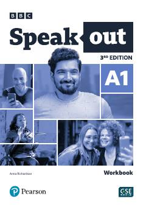

SAIngliz tilini boshlang'ich A1 darajada o'rganish uchun amaliy ish daftari.
Ushbu nashr ingliz tilini boshlang'ich darajada o'rganuvchilar uchun mo'ljallangan bo'lib, turli amaliy mashqlar, lug'at boyligi va grammatik qoidalarni mustahkamlash vazifalarini o'z ichiga oladi. Kitob tinglash, yozish va so'zlashuv ko'nikmalarini rivojlantirishga qaratilgan topshiriqlarga boy.